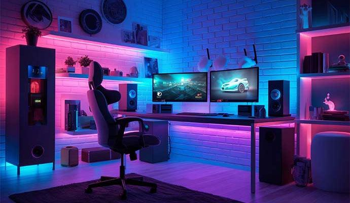

Videojuegos más conocidos
Los videojuegos modernos tienen gráficos avanzados y modos online que permiten jugar con amigos.
Categorías populares
- Acción
- Aventura
- Deporte
En esta sección conocerás algunos datos y categorías de los videojuegos y pasos de como crear.

Los videojuegos modernos tienen gráficos avanzados y modos online que permiten jugar con amigos.
La tecnología seguirá mejorando la experiencia gamer con realidad virtual e inteligencia artificial.